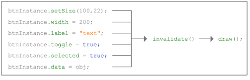

This section describes the framework and highlights each subsystem to provide a high-level understanding of the CLIK component architecture.
Fig 1: CLIK Hierarchy
All of the prebuilt components bundled with Scaleform CLIK inherit core functionality from the UIComponent class (gfx.core.UIComponent). This class is the foundation of all CLIK components, and it is recommended that custom components be subclassed from UIComponent.
The UIComponent class itself derives from the Flash 8 MovieClip class, and thus inherits all properties and methods of a standard Flash movieclip. Several custom read/write properties are supported by the UIComponent class:
UIComponent has several empty methods that are meant to be implemented by subclasses. These include:
The UIComponent mixes in the EventDispatcher class to support event subscribing and dispatching. Therefore, all subclasses support event subscribing and dispatching. For more information, see the Event Model section.
Initialization
This class performs the following initialization steps inside an onLoad() event handler:
configUI() method. validateNow() method, which performs a redraw immediately, i.e, calls draw().
Almost all CLIK components support visual states. States are set up by navigating to a specific keyframe in the component timeline, or passing state information onto sub-elements. There are three common state setups:
1. Button components
Any component that behaves like a button, which responds to mouse actions, and optionally be "selected" fall into this category. Examples of CLIK components that use this schema are Button and its variants, ListItemRenderer, RadioButton and CheckBox. Sub-elements of complex components such as ScrollBar are also Button components. CLIK components that fall into this category either directly use the Button (gfx.controls.Button) class or use a class that is derived from the Button class.
The basic states supported by button components are:
Button components also support prefixed states, which can be set depending on the value of other properties. By default, the core CLIK Button component only supports a "selected_" prefix, which is appended to the frame label when the component is in a selected state.
The basic states supported by button components, including selected states, are:
Note: The states mentioned in this section are only a handful of the full complement of states supported by CLIK Button components. Please refer to the Getting Started with CLIK Buttons document for the complete list of states.
The CLIK Button class provides a getStatePrefixes() method, which allows developers to change the list of prefixes depending on the component′s properties. This method is defined as follows:
private function getStatePrefixes():Array
{
return (_selected) ? ["selected_",""] : [""];
}
The CLIK Button by default only supports the "selected_" prefix. The getStatePrefixes() method returns a different array of prefixes depending on its selected property. This prefix array will be used internally in conjunction with the appropriate state label to determine the frame to play.
When a state is set internally, for example on mouse rollover, a look-up table is queried for a list of frame labels. The stateMap property in the Button class defines the state to frame label mapping. The following is the state mapping defined in the CLIK Button class:
private var stateMap:Object =
{
up:["up"],
over:["over"],
down:["down"],
release: ["release", "over"],
out:["out","up"],
disabled:["disabled"],
selecting: ["selecting", "over"],
kb_selecting: ["kb_selecting", "up"],
kb_release: ["kb_release", "out", "up"],
kb_down: ["kb_down", "down"]
}
Each state may have more than one target label. The values returned from the state map is combined with the prefix returned by getStatePrefixes() to generate a list of target frames to be played. The following figure describes the complete process used to determine the correct frame to play:
Figure 2: Process used to determine the correct keyframe to play.
The playhead will always jump to the last available frame, so if a certain prefixed frame is not available, the component will default to the previously requested frame. Developers can override the state map to create custom behaviors.
2. Non-button Interactive Components
These refer to any components that are interactive, and can receive focus, but does not respond to mouse interaction. Examples of CLIK components that use this schema are List, OptionStepper, Slider and TextArea. These components may contain child elements that respond to mouse events. The states supported by the non-button interactive components are:
3. Non-interactive Components
These refer to any component that is not interactive, but can be disabled. The Label component is the only non-interactive component in the default component set that support states. The states supported by the non-interactive components are:
4. Special Cases
There are some components which do not abide by the state rules described above. StatusIndicator, and the extended ProgressBar component use the timeline animation to display the value of the component. The playhead will be set to the frame that represents the percentage value of the component. For instance, a 50-frame timeline in a StatusIndicator with a minimum value of 0, a maximum value of 10, and a value set to 5 (50%) will gotoAndStop() on frame 25 (50% of 50 frames). It is fairly simple to extend these components to manage the display programmatically. The updateValue() method can be modified or overridden to change this behavior.
In some cases, components may have special modes in addition to their default behavior that provide support for additional component states. The TextInput and TextArea components enable the over and out states when their actAsButton property is set to support mouse cursor roll over and roll out events when not focused.
The CLIK component framework uses a communication paradigm known as the event model. Components "dispatch" events when they change or are interacted with, and container components can subscribe to the different events. This allows multiple objects to be notified of a change, instead of just one, which is how ActionScript 2 callbacks work.
The EventDispatcher class (gfx.events.EventDispatcher) provides an easy to use API that supports the event model. A CLIK component can either extend this class or use the EventDispatcher.initialize() method to mix-in its behavior. However, if the CLIK component derives from UIComponent, then it only needs to call super() in its contructor since UIComponent already does a mix-in of EventDispatcher. An EventDispatcher subclass or mix-in provides support for subscribing and dispatching of events.
Usage and Best Practices
Subscribing to an Event
To subscribe to an event, use the addEventListener() method, with a type parameter that specifies the type of interaction to listen for. Conversely, removeEventListener() will unsubscribe from an event. If multiple listeners are added with the exact same parameters, only one event will be fired. Each of these methods also requires a scope parameter, which is the listening object, and a callBack, which is the String name of the function that is called when the event is dispatched.
The EventTypes class (gfx.events.EventTypes) contains an enumeration of commonly used events. They can be used instead of strings denoting the event type (EventTypes.SHOW instead of "show").
Example:
buttonInstance.addEventListener("itemClick", this, "callBack");
function callback(eventObj:Object):Void
{
buttonInstance.removeEventListener("itemClick", this, "callBack");
}In this example the buttonInstance is set to listen for "itemClick" events, and to execute the function "callback" when it receives the event. The callback function then removes the event listener.
Dispatching an Event
CLIK components that wish to notify subscribed listeners of a change or interaction use the dispatchEvent() method. This method requires a single argument: an object containing relevant data, including a mandatory type property which specifies the type of event to be dispatched. The component framework automatically adds a target property, which is a reference to the object dispatching the event, but it can also be set manually to override it with a custom target.
Example:
dispatchEvent({type:"itemClick", item:selectedItem});
The CLIK components use a custom focus handling framework, which is implemented in most components, and should work well with nonframework components and symbols. All focus changes happen at the GFx player level, either by mouse or keyboard (gamepad) focus changes, or by calling Selection.setFocus(instance) in ActionScript. The FocusHandler manager (gfx.managers.FocusHandler) is instantiated as soon as a single component class is created. There is no need to instantiate the FocusHandler directly.
Usage and Best Practices
Currently focus is required to be set on a CLIK component instance; otherwise focus will default to the player. If not set, the focus management system will not behave correctly (such as the Tab key not switching focus, etc.). Focus can be applied by setting the focused property on any component to true. Another method that works to apply focus, which also works with non-component elements, is the following:
Example:
Selection.setFocus(firstComponentOrMovieClip); MovieClips without mouse handlers (eg., onRelease, onRollOver,) cannot be focused by the GFx or Flash player, and will not generate focus change events. Button components automatically add mouse handlers. Other components will set a combination of the standard MovieClip focusEnabled and tabEnabled properties.
Components with focusable subelements, such as ScrollBar, pass focus onto their owner component by setting the focusTarget property. When focus changes to a component, the FocusHandler will recursively search the component hierarchy for a focusTarget, and give focus to the last component that doesn′t return a focusTarget.
Sometimes a component needs to appear focused when it is not the actual focus of the player or application. The displayFocus property can be set to true to tell a component to behave as if it is focused. For example, when a Slider is focused, the track of a Slider needs to appear to also be focused. Note that the changeFocus() method is called on a component when the focused property changes.
Example:
function changeFocus():Void
{
track.displayFocus = this.focused;
}
Conversely, sometimes a component needs to be clickable, but not focusable, such as a draggable panel, or any other component that would benefit from mouse-only control. In this case, set the tabEnabled property false.
Example:
background.tabEnabled = false;
Capturing Focus in Composite Components
Composite components are components which are made up of other components, such as a ScrollingList, OptionStepper, or ButtonBar. The component itself will likely have mouse handlers on the sub-components and not have any mouse handlers of its own. This means that the Selection engine in Flash and GFx cannot focus the item and the built-in navigation support will have trouble identifying the component, and instead inspect its children in error.
To make the component behave as a single entity despite its composition, the following steps can be taken:
1) Set tabEnabled=false on all sub-components that have mouse-handlers (such as the arrow buttons in OptionStepper).
2) Set the focusTarget property on all sub-components that have mouse-handlers to the container component. Make sure to set focusEnabled=true in the container component.
3) If necessary set the displayFocus property in the sub-components to true inside the container component′s changeFocus method.
Now when the sub-component is focused, the focus will be transferred to the container component.
Since the CLIK components derive from the Flash 8 MovieClip class, they mostly behave the same as any other movieclip instance when receiving user input. Mouse events are caught by components if they install mouse handlers. However there is a major conceptual change in CLIK related to how keyboard or equivalent controller events are handled.
Usage and Best Practices
All non-mouse input is intercepted by the InputDelegate. The InputDelegate converts input commands into InputDetails objects either internally, or by requesting the value of an input command from the game engine. The latter involves modifying the InputDelegate.readInput() method to support the target application. Once InputDetails have been created, an input event is dispatched from the InputDelegate.
InputDetails consist of the following properties:
The FocusHandler listens for input events from the InputDelegate and passes them to the components through the focus path. The focused components is used to determine the focus path, which are a top-down list of components in the display-list hierarchy that implement the handleInput() method.
This method is called on the top-most component in the focus chain, and the InputDetails and pathToFocus array are passed as parameters.
Figure 3: The handleInput() chain.
The FocusHandler expects a Boolean response to the handleInput() call, which indicates if the component, or any components in the focus path, has handled the input. If it receives a false response, and the input has a navEquivalent that is not null, then the input is passed on to the GFx player.
Example:
function handleInput(details:InputDetails, pathToFocus:Array):Boolean
{
if (details.navEquivalent == "left")
{
// or NavigationCode.LEFT
doSomething();
return true;
}
return false;
}
It is up to each component handling input to bubble the event to the next component in the pathToFocus array, and to return true or false if the input is handled. It is a good idea not to assume that the next component in the focusPath will implement the handleInput correctly, so the method should ensure that it passes a Boolean value back and not just the return value of the bubbled input.
Example:
function handleInput(details:InputDetails, pathToFocus:Array):Boolean
{
var nextItem:MovieClip = pathToFocus.shift();
var handled:Boolean = nextItem.handleInput(details, pathToFocus);
if (handled) { return true; }
// custom handling code
return false; // or true if handled
}
Input can also be passed on to components not in the focus path. For instance, in DropdownMenu, the handleInput is passed on to the dropdown list component, even though it is not in the pathToFocus array. This enables the list to respond to key commands if it makes sense to do so.
Example:
function handleInput(details:InputDetails, pathToFocus:Array):Boolean
{
var handled:Boolean = dropdown.handleInput(details);
if (handled) { return true; }
// custom handling code
return false; // or true if handled
}
It is also possible to listen for the input event manually by adding an event listener to the InputDelegate.instance, and handle the input that way. Note that the input will still be captured by the FocusHandler and passed down the focus hierarchy.
Example:
InputDelegate.instance.addEventListener("input", this, "handleInput");
function handleInput(event:Object):Void
{
var details:InputDetails = event.details;
if (details.value = Key.TAB) { doSomething(); }
}
The InputDelegate should be tailored to the game to manage the expected input. The default InputDelegate handles keyboard control, and converts the arrow keys, as well as the common game navigation keys W, A, S, and D into directional navigation equivalents.
Multiple Mouse Cursors
Some systems, such as the Nintendo Wii, support multiple cursor devices. The CLIK component framework supports multiple cursors, but will not allow multiple component focus in a single SWF. If two user click on separate buttons, the last clicked item will be the focused item.
All mouse events dispatched in the framework contain a mouseIndex property, which is the index of the input device that generated the event.
Example
myButton.addEventListener("click", this, "onCursorClick");
function onCursorClick(event:Object):Void
{
switch (event.mouseIndex)
{
...
}
}
Invalidation is the mechanism used by the components to limit the number of times the component redraws when multiple properties are changed. When a component is invalidated, it will redraw itself on the next frame. This enables developers to throw as many changes at once to the components, and only have the component update once. There are some exceptions where the component needs to redraw immediately; however for most cases, invalidation is sufficient.

Figure 4: Scaleform CLIK components automatically invalidate when certain properties are changed.
Usage and Best Practices
After any internal component change (usually caused by setter functions), UIComponent.invalidate() should be called, which ultimately calls UIComponent.draw() in the component. The invalidate() method generates the draw() call using a timer based delay to avoid unnecessary updates. Developers using the existing components will likely not need to manage invalidation, but should at least by aware of it.
For cases where an immediate redraw is required, developers can use the UIComponent.validateNow() method.
Components scale in two ways:
1) Using a re-flowing layout, where the component′s scale is reset, and then its elements resized to match the original size. Components with sub-elements and no background, such as ScrollBar take this approach.
2) Counter-scaling the elements to maintain the aspect ratio. The component remains scaled, but its elements are counter-scaled to give the appearance of not scaling. This approach enables components with a graphics background, and a scale9grid to be stretched, and the context to scale inside instead of becoming distorted.
Typically components use the reflow method due to Flash scale9Grid limitations. This forces developers to build "skin" symbols, similar to Flash/Flex components. Reflowing works best if components have sub-elements that may also scale, therefore it is intended for containers and similar entities.
The counter-scaling method was created specifically for CLIK, mainly due to the extended scale9Grid functionality available in Scaleform GFx. This allowed for the creation of single-asset components using frame states instead of the more intensive layered approach used by other component sets. The base CLIK components are minimilastic in nature, usually containing a background, a label and an optional icon or sub-button, and therefore ideal for the counter-scaling method. However, counter-scaling is not intended for container-like setups (panel layout, etc). In such cases, the reflow method with a background that is constrained along with the rest of the sub-elements is the recommended approach.
Components can be scaled on the stage in the Flash IDE, or dynamically scaled using the width and height properties, or the setSize() method. The appearance of scaled components may not look accurate in the Flash IDE. This is a limitation of delivering the components as un-compiled MovieClips without LivePreviews. Testing the movie in GFxPlayer is the only way to get an accurate representation of how the scaled component will appear in-game. The CLIK extension is bundled with a Launcher panel to improve this part of the workflow.
Scale9Grid
Most components use the second scaling method. MovieClip assets inside of a Scale9Grid in the GFxPlayer will adhere to the scale9grid for the most part, whereas Flash will discard the grid if it contains MovieClips. This means that even though a scale9grid does not work in Flash Player, it may work perfectly in GFx.
One thing to note is that when a MovieCLip has a scale9grid, subelements will also scale under that rule. Adding a scale9grid to the subelement will cause it to ignore the parent′s grid, and draw normally.
Constraints
The Constraints utility class (gfx.utils.Constraints) assists in the scaling and positioning of assets inside a component that scales. It enables developers to position assets on stage, and for the assets to retain their distance from the edges of the parent component. For example, the ScrollBar component will position the track, up arrow, and down arrow buttons according to where they are dropped on stage. Constraints work with both scaling methods used in the components.
The following code adds the ScrollBar assets to a constraints object in the configUI() method, aligning the buttons to the top and bottom, and scaling the track so it stretches with its parent. The draw() method contains code to update the constraints, and consequently any elements registered with it. This updating is done inside draw() because it is called after component invalidation, commonly after the component′s dimensions have changed.
private function configUI():Void
{
...
constraints = new Constraints(this);
// The upArrow already sticks to top left.
constraints.addElements(downArrow, Constraints.BOTTOM);
constraints.addElenent(track, Constraints.TOP|Constraints.BOTTOM);
...
}
private function draw():Void
{
...
constraints.update(__width, __height);
...
}
Components that require a list of data use a dataProvider approach. A dataProvider is a data storage and retrieval object that exposes the appropriate API defined in the CLIK IDataProvider class (gfx.interfaces.IDataProvider).
The dataProvider approach uses a request model with callbacks, instead of direct property access. This allows the dataProvider to reach out to the game engine for data as it is needed. This provides memory benefits, as well as the ability to chunk large data sets into small, manageable ones.
Components that use a dataProvider include anything that extends CoreList (ScrollingList, TileList), as well as OptionStepper and DropdownMenu. None of the components in the CLIK framework require the use of the IDataProvider interface; only the inclusion of the methods in its API. The IDataProvider class is only provided for reference.
Usage and Best Practices
The DataProvider class included in the framework (gfx.data.DataProvider) includes the static initialize() method to add the dataProvider methods to any ActionScript array. Components that use a dataProvider will automatically initialize arrays making them accessible using the dataProvider approach.This means the following syntax initializes a statically declared array as a fully operational dataProvider with the methods described in IDataProvider:
myComponent.dataProvider = [ "data1", 4.3, {label:"anObjectElement", value:6} ];The methods that a dataProvider should implement are:
Scaleform CLIK provides a custom Tween class (gfx.motion.Tween) that has similar behavior to the Flash 8 Tween class, but is fully compatible with GFx. Both Tween classes support the same types of easing functions, such as the ones under the mx.transitions.easing.* package.
However, the Scaleform CLIK Tween class has significant differences to its counterpart. Firstly, it installs tween methods to the Flash 8 MovieClip class prototype. This exposes tween functionality to all MovieClips, not just Scaleform CLIK components. Secondly, the Scaleform CLIK Tween class uses onEnterFrame and therefore only one tween can be active per MovieClip at one time. If a new tween is created for a MovieClip that already has an active tween, then the new tween will stop the previous one. However the tween methods support multiple properties per MovieClip, allowing different properties of the same object to be changed at the same time. The examples in the following section show how to create tweens that affect multiple properties at the same time.
Usage and Best Practices
The Tween class exposes two main methods in MovieClip: tweenTo() and tweenFrom(). The tweenTo() method tweens from the current property value of the MovieClip to one specified in the function parameter list. The tweenFrom() method tweens from a property value specified in the parameter list to the current value.
Before using the tween methods, they must be installed with the MovieClip prototype. The Tween class provides a helper static function to perform this action: Tween.init().
Example:
import mx.transitions.easing.*;
import gfx.motion.Tween;
Tween.init(); // Install tween methods to MovieClip prototype
// Perform a 1 second tween from the current horizontal position and
alpha values to the ones specified
myMovieClip.tweenTo(1, {_x: 200, _alpha: 0}, Strong.easeIn);
To be notified when the tween has completed, simply create an onTweenComplete() function in the object being tweened.
Example:
import mx.transitions.easing.*;
import gfx.motion.Tween;
Tween.init();
mc.onTweenComplete = function()
{
trace("Tween has finished!");
}
mc.tweenTo(5, {_rotation: 20}, Bounce.easeOut);
Scaleform CLIK includes the PopUpManager class (gfx.managers.PopUpManager) to provide support for popups such as dialogs and tooltips. The Dialog component uses the PopUpManager to display its content.
Usage and Best Practices
The PopUpManager has several static methods to assist in the creation and maintenance of popups. The createPopUp() method can be used to create a popup using a linkage ID to any MovieClip symbol (including CLIK components). The context parameter is used to create an instance of the popup, and the relativeTo parameter is used to position the popup. Both parameters are expected to be MovieClips.
Example
import gfx.managers.PopUpManager;
PopUpManager.createPopUp(context, "MyToolTipLinkageID", {_x: 200, _y:200}, relativeTo);The GFx extension topmostLevel is used to guarantee that the popups are always displayed on top of all other elements on the Stage, This scheme was used instead of trying to create the popup at the root level because of problems related to library scopes. If a child SWF was loaded inside a parent, and it tried to create an instance of a symbol defined in its library in a path that existed in the parent context, then a symbol lookup error would occur because the parent is unable to access the child’s library. Unfortunately, there is no clean workaround for this problem and the topmostLevel scheme is the best alternative.
Note that topmostLevel can be applied to non-popups as well, and the z-ordering of such elements in the Stage is maintained. Therefore, to draw a custom cursor on top of popups, the cursor can be created at the highest depth or level and set its topmostLevel property to true.
The DragManager class (gfx.managers.DragManager) provides support to initiate and manage drag operations. The class behaves like a singleton, and provides an instance property to access the one and only object. Using this object, developers can start and stop drag operations.
The startDrag() method can be invoked to start the drag operation using either a MovieClip on the Stage or a symbol ID, which will create an instance of the symbol for dragging. The stopDrag() method ends the drag-operation and also notifies all listeners. The DragManager also registers itself with the InputDelegate to allow drag-operations to be cancelled using the keyboard or equivalent controller.
Usage and Best Practices
Figure 5: DragDemo in action
DragManager only performs drag management. It is up to developers to create components that utilize the DragManager to provide true drag and drop support. Scaleform CLIK includes a sample drop target class called DragTarget (gfx.controls.DragTarget). The DragTarget extends UIComponent and thus is classified as a CLIK component. It has several unique features that complement the DragManager.
The DragTarget has a concept of drag types. These drag types can be configured per DragTarget to enable the component to allow or disallow a drop operation. To complement these drag types, the DragTarget also installs event listeners for dragBegin and dragEnd with the DragManager. This enables the DragTarget to visually display whether or not it can accept a drop operation.
The Inventory demo bundled with Scaleform CLIK uses two components that subclasses or composes the DragTarget to demonstrate drag and drop operations using the DragManager and the DragTarget. These two components are the InventorySlot and the ItemSlot. These component classes are provided as part of the CLIK framework; however, note that they are meant to be a sample of what can be accomplished and not an end-all solution to all use cases.
The InventorySlot class (gfx.controls.InventorySlot) supports the display of a set of icons that denote inventory items, such as those commonly found in role playing games. It subclasses the DragTarget class to provide drop support, and contains code to generate drag operations using the DragManager. When the drag operation begins, a copy of the icon is created to follow the cursor. On a valid drop operation, the target InventorySlot will change its icon to be the one that was dragged.
The ItemSlot class (gfx.controls.ItemSlot) is very similar to the InventorySlot, but contains extra functionality to support mouse events such as clicking. Instead of subclassing, the ItemSlot contains an instance of DragTarget. It also contains an instance of a CLIK Button. These two subelements provide the necessary functionality for ItemSlot to support both drag and drop and button operations.
Delegate
The Delegate class (gfx.utils.Delegate) provides a static method to create a function delegate with the correct scope. It is not used by any Scaleform CLIK components, and is mainly used by the DragManager.
Usage example:
eventProvider.onMouseMove = Delegate.create(this, doDrag);
Locale
The Locale class (gfx.utils.Locale) provides an interface for custom localization schemes. The GFx localization scheme performs translation lookup internally and does not require an explicit lookup from ActionScript. However, custom translation providers may require this lookup. The Button, Label and TextInput components and their subclasses all query for a localized string via the Locale.getTranslatedString() static method. The default implementation simply returns the same value. It is up to the developer to modify the Locale class to support the custom localization scheme.